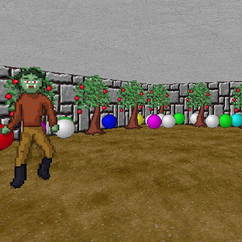
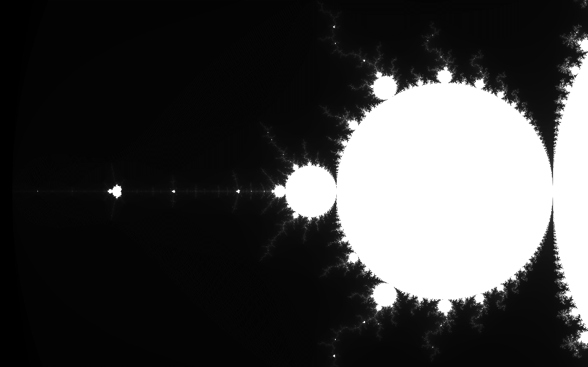

Unity port of a game originally created by Markus "Notch" Persson. Visit the main page here.
A very simple explorer of the Mandelbrot fractal. You can play it in your browser, here.
A very simple port of the Mega Drive classic - Sonic the Hedgehog (the first one!) to Nintendo's GameBoy. It features almost the entire first level. If I ever get to finishing this, it want it to feature the entire Green Hill Zone. I made it when I was learning how to use GBStudio, a GameBoy game creator tool. You can download the latest version here.
Zombsody is a 2D top-down shooter game about going around a city and shooting zombies. It was originally made in under 8 hours as a personal challenge. With the help of NostalgiaModder, who made some really amazing textures, we're currently remaking the game. Every mechanic has already been added to the new project. All that's missing are animations and more levels. Read more...
An unfinished first person shooter with pixelated graphics style straight from the 90s. The game is no longer
in development, but I might return to it sometimes. Here's some story, that wasn't implemented:
You are an
astronaut who arrives on an orbit station "121-Alpha". The station is controlled by a robot (who's name I
haven't made yet), who acts like a regular autopilot, but in reality, he controlls evil robots who infested
the entire base. It is your duty to kill all the robots, and then face the final boss of the game (the main
evil robot).
The game was meant to be played in singleplayer or multiplayer.
You can try the alpha
version here.